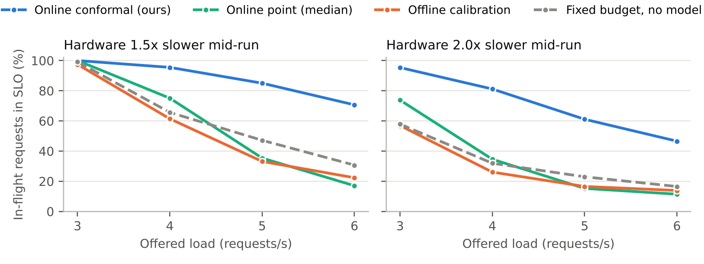

A modern LLM server is full of predictions. Chunked-prefill schedulers decide how many prompt tokens to add to each step so that requests mid-generation still meet their time-per-output-token (TPOT) SLO [2]; recent systems make that decision with a learned model of step latency [9]. Memory managers decide how much KV cache to reserve for a request whose output length is unknown, and schedulers order requests by predicted length [10]. Each of these predictors is fit to profiling data or recent traffic and then used as if it were true.
Two things move under them. The hardware moves at run time: co-tenants on shared accelerators, thermal and power capping, and interference change step latency by tens of percent. The workload moves too: a product launch, a new client or a longer-answer mode shifts the distribution of output lengths. A controller that packs work up to a predictor's estimate is exactly the controller that breaks when the estimate goes stale, and, as we show, it can break worse than a controller that uses no predictor at all.
The fix we study is deliberately simple and general. Every predictor is reduced to a point prediction times a calibration factor on the ratio actual/predicted, and the factor is set by adaptive conformal inference (ACI) [5], which guarantees that the long-run fraction of outcomes exceeding the bound converges to a chosen α for any sequence, adversarial drift included. The controller then acts on the bound, not the point. We make four contributions:
Serving. PagedAttention/vLLM [1] pages the KV cache and allocates it on demand, preempting requests when memory runs out; Orca [8] introduced continuous batching; Sarathi-Serve [2] chunks prefills under a fixed per-step token budget; DistServe [7] optimises goodput, requests per second meeting both TTFT and TPOT SLOs, by disaggregating prefill and decode; Splitwise [4] released the traces we replay. Predictive scheduling. SynergySched [9] fits an online per-iteration latency model and binary-searches the largest token budget whose predicted latency meets a TPOT target; this is the closest prior work to Pacer's budget controller, and our online point baseline follows it (our reimplementation, not its code). MAPS [10] calibrates output-length predictions with a sliding-window conformal method for routing and queue ordering. Zhao and Georgantas [11] argue that offline GPU interference models drift and need online updates. We are not aware of work that wraps serving-control predictors in an online conformal bound with a long-run guarantee and measures what that buys under live interference. Conformal prediction. Split conformal prediction gives finite-sample coverage under exchangeability [3]. ACI [5] drops exchangeability by updating the miscoverage level αt+1 = αt + γ(α − errt), and the empirical miss rate converges to α for any sequence. Scheduling. Maximising on-time jobs on one machine (1‖ΣUj) is solved exactly by Moore-Hodgson [6].
A predictor f outputs a point estimate pt of a positive quantity at (step latency, output length). After each outcome we observe rt = at/pt, keep a window of recent ratios, and set qt to their empirical (1−αt)-quantile with αt updated by ACI. Controllers act on qtpt. Two baselines differ only in qt: offline fixes it to the split-conformal quantile on calibration data; online point sets it to the window median (optionally divided by a fixed safety factor).
For a step with prefill chunks (ni, Li) and decodes with contexts cj, the model uses features [1, Σni+|D|, ΣniLi, Σcj, |D|·max cj, |P|, |D|] (fixed cost, GEMM tokens, prefill attention FLOPs, decode KV bytes, padded attention, per-sequence overheads) with non-negative coefficients fit to relative error. Each coefficient has a physical unit, so the model extrapolates: 4.4% error on steps larger than any in training, where gradient-boosted trees reach 50.8% (Table 7). Given the running decodes and an ordered prefill queue, Pacer binary-searches the largest prefill budget c with qt·p(decodes, chunks(c)) ≤ τ, the TPOT SLO. Prompts are ordered by Moore-Hodgson with deadlines arrival + TTFT SLO and processing times from the model scaled by the current median ratio; prompts that cannot meet their deadline are still served, after the others.
At admission a server must reserve KV memory for an output of unknown length. Reserving the maximum (max_tokens) wastes memory; allocating on demand, as vLLM does, packs tightly but preempts and recomputes requests when memory runs out. A predicted reservation sits between them. We predict log(output) from log(prompt length) by least squares, reserve qt·pt tokens (capped at max_tokens), grow the allocation if a request outgrows it, and preempt the youngest request (recompute) when no block is free. The ratio is observed when a request finishes, so feedback is delayed by one request lifetime; the ACI guarantee does not depend on that delay.
Proposition 1 (step-level overshoot). Let τ be the TPOT SLO and suppose that at every step where a decode-only batch is predicted feasible, Pacer selects a batch with qtpt ≤ τ. Let ρT be the fraction of the first T steps where even the decode-only batch is predicted infeasible. Then the fraction of steps whose actual latency exceeds τ is at most
α + (max(α1, 1−α1) + γ) / (γT) + ρT.
Proof. On a feasible step without an ACI miss, at = rtpt ≤ qtpt ≤ τ, so overshoots occur only on misses or infeasible steps. Gibbs and Candès [5, Prop. 4.1] bound the empirical miss frequency by α plus the second term for every sequence of ratios. □
The same argument applied to Section 3.3 bounds the long-run fraction of requests that outgrow their reservation by α plus an O(1/(γN)) term over N finished requests.
Neither statement guarantees per-request SLOs: those depend on how misses cluster within a request and on the tail of the ratio. We therefore measure the mapping. Moore-Hodgson is exact only for the single-server abstraction with known processing times; batching and prediction error make it a heuristic in practice.
Setup. A Llama-architecture decoder (RMSNorm, RoPE, GQA, SwiGLU; 63M parameters, FP32) runs on a 4-core cloud CPU. No GPU was available for this version; the repository includes a one-command GPU reproduction. Workloads are Poisson arrivals with lognormal lengths and replays of the Azure LLM inference traces [4] (chat and code), with time compressed and lengths scaled to fit the CPU. SLOs are TTFT 2 s and TPOT 100 ms unless stated. A discrete-event simulator shares the serving loop, schedulers and memory manager with the real engine and matches its SLO attainment to within 3.3 points on average over 40 paired runs. Simulated hardware drift multiplies step latency by 1.5x or 2.0x during the middle 40% of a run, with 8% lognormal step jitter; results are means over 3 seeds. "In drift" counts requests in flight at any point during the slowdown.

| In-drift SLO attainment (simulator) | 1.5x, 4/s | 1.5x, 5/s | 2.0x, 3/s | 2.0x, 4/s | Steps over bound |
|---|---|---|---|---|---|
| Chunked, 128 tokens (Sarathi) | 65.2% | 20.2% | 57.0% | 16.3% | n/a |
| Chunked + deadline ordering, 128 | 65.6% | 47.1% | 57.9% | 31.9% | n/a |
| Pacer, offline calibration | 61.4% | 33.1% | 56.9% | 26.0% | not tracked |
| Pacer, online point (median) | 75.1% | 35.4% | 73.8% | 34.6% | 47-50% |
| Pacer, online point ÷ 0.9 | 88.9% | 41.2% | 94.3% | 48.2% | 13-22% |
| Pacer, online conformal (α = 0.1) | 95.5% | 85.0% | 95.4% | 81.1% | 9.6-10.0% |
The mechanism is the same in all three failures. A model-predictive controller fills every step up to the latency it believes is safe. When the hardware slows, the offline model's belief is wrong on nearly every step; a fixed budget at least leaves accidental slack. The online point estimate learns the new speed but aims at the median, so half the steps still overshoot, and TPOT is a mean over a request's steps. A conformal bound aims at a quantile chosen by the operator, so the overshoot rate is a parameter rather than an accident.
On the real engine, a neighbour process spinning a fraction of one core during the middle 40% of each run slows steps by roughly 1.5x.
| Real engine, noisy neighbour (2 seeds) | In drift, 2.0/s | In drift, 2.5/s | Overall, 2.0/s | Steps over bound |
|---|---|---|---|---|
| Chunked, 128 tokens (Sarathi) | 47.4% | 8.9% | 67.2% | n/a |
| Chunked + deadline ordering, 128 | 48.2% | 3.1% | 69.5% | n/a |
| Pacer, offline calibration | 30.6% | 35.1% | 61.5% | not tracked |
| Pacer, online point (median) | 63.1% | 15.5% | 80.8% | 48.2-50.7% |
| Pacer, online point ÷ 0.9 | 68.6% | 50.2% | 84.8% | 20.8-25.0% |
| Pacer, online conformal (α = 0.1) | 85.5% | 68.3% | 90.8% | 9.9-10.3% |
Across all real runs, including the earlier machine, the conformal scheduler's observed fraction of steps over its bound was 9.9-10.2% (synthetic traffic, 5 loads), 10.1-10.4% (Azure chat, 3 loads) and 8.5-10.3% (noisy neighbour, 6 runs), against a 10% target. At 2.5 req/s both fixed budgets collapse (3-9%) while offline Pacer keeps 35%: the static policies fail by queueing, the offline model by overshooting, and only the calibrated controller avoids both.
Here the step scheduler is Pacer with no hardware drift; only the KV reservation policy changes. Requests arriving during the middle 40% of the trace generate 2.5x more tokens (capped at max_tokens = 384), and the KV pool holds 4,096 tokens so that memory binds. The predictor is calibrated on traffic from before the shift.
| KV reservation policy | Outgrow (syn.) | Outgrow (Azure) | Preempt./req (Azure, 5/s) | SLO (Azure, 5/s) | SLO (syn., 5/s) |
|---|---|---|---|---|---|
| Reserve max_tokens | 0% | 0% | 0.00 | 74.2% | 73.5% |
| On demand (vLLM) | 98.3% | 92.4% | 0.46 | 74.5% | 74.0% |
| Predicted, offline conformal | 21.8% | 29.6% | 0.23 | 76.1% | 78.3% |
| Predicted, online point | 40.5% | 43.1% | 0.26 | 75.6% | 75.0% |
| Predicted, online conformal (α = 0.1) | 8.6% | 7.0% | 0.02 | 80.2% | 75.9% |
| Oracle (true length) | 0% | 0% | 0.00 | 82.2% | 81.9% |
The calibration result transfers cleanly: the conformal reservation is outgrown by 7-9% of requests against a 10% target, while offline calibration is outgrown by 22-30% (45-60% of the requests that arrive during the shift) and the online point estimate by 41-43%. Preemptions fall by an order of magnitude. The SLO effect is smaller and mixed, and we report it as such: on the Azure chat trace the conformal reservation is the best non-oracle policy at 5 and 7 requests/s (+4 to +6 points), while on synthetic traffic offline calibration is better at most loads, because its smaller reservations admit more requests and recompute preemptions are cheap in this engine. Where preemption is expensive (long contexts, swapping), the calibrated policy's advantage should grow; we have not measured that regime.
| Capacity relative to best policy | P-100 | P-60 | P-150 | Burst | Az-chat | Az-code | Worst |
|---|---|---|---|---|---|---|---|
| Pacer, offline | 1.00 | 0.99 | 1.00 | 0.98 | 0.97 | 1.00 | 0.97 |
| Pacer, online conformal | 0.99 | 1.00 | 0.96 | 1.00 | 1.00 | 0.94 | 0.94 |
| Chunked + deadline ordering, 128 | 0.99 | 0.70 | 0.94 | 0.88 | 0.95 | 0.99 | 0.70 |
| Chunked + deadline ordering, 64 | 0.91 | 0.95 | 0.87 | 0.62 | 0.82 | 0.70 | 0.62 |
| Chunked, 128 (Sarathi) | 0.79 | 0.70 | 0.76 | 0.68 | 0.80 | 0.45 | 0.45 |
| Prefill-first (vLLM v0) | 0.66 | 0.65 | 0.74 | 0.61 | 0.63 | 0.00 | 0.00 |
| Real engine, steady state | 5 req/s | 6 req/s | 7 req/s | Capacity |
|---|---|---|---|---|
| Prefill-first | 77.5% | 9.0% | 4.5% | 4.19 |
| Chunked, best fixed (128) | 86.0% | 51.0% | 21.0% | 4.71 |
| Chunked + deadline ordering (128) | 91.5% | 89.5% | 91.5% | 5.75 |
| Pacer, offline | 96.5% | 90.5% | 90.0% | 7.00 |
| Pacer, online conformal | 98.0% | 90.0% | 87.0% | 6.00 |
| Capacity (req/s, simulator, 5 seeds) | Poisson | Azure chat | Azure code |
|---|---|---|---|
| Pacer | 6.57 | 8.46 | 2.00 |
| EDF instead of Moore-Hodgson | 6.54 | 8.60 | 1.65 |
| FCFS ordering | 5.22 | 7.30 | 1.07 |
| with slack banking | 6.38 | 8.53 | 2.00 |
| Best fixed budget, FCFS | 5.19 | 7.01 | 1.08 |
| Step-latency model (600 profiled steps) | Random split | Extrapolation |
|---|---|---|
| Roofline, measured peaks + 2 fitted scalars | 50.2% | 81.0% |
| Gradient-boosted trees | 17.9% | 50.8% |
| Linear + GBDT residual | 9.9% | 5.0% |
| Physics-informed linear | 7.3% | 4.4% |
Hardware. All measurements use a CPU and a 63M-parameter model; absolute latencies do not transfer, and the drift we inject (a CPU neighbour, a multiplicative slowdown) is simpler than GPU interference, power capping or thermal throttling. GPU results against vLLM itself are the most important missing experiment. Baselines. The online point baseline is our reimplementation of the idea in [9], not its code, inside our engine. Workloads. Trace replay compresses time and lengths; the output-length shift in Section 5.3 is synthetic. Guarantees. Proposition 1 bounds step-level overshoot only; per-request SLOs are measured, not proven. KV predictor. The SLO benefit of calibrated reservation is mixed in our regime (Section 5.3). Fairness. Pacer raises goodput partly by letting requests that can no longer meet their TTFT wait, which worsens their latency.
Learned predictors make LLM serving faster when the world matches their calibration and can make it worse than no predictor when it does not. Refreshing a point estimate is not the same as controlling risk. An online conformal bound is a few lines of code around any positive-valued predictor, gives the operator one interpretable dial (the miss rate), held that rate within 1.5 points of target in every real run we made, and turned the worst policy under drift into the best one. The obvious next step is to measure it inside a production serving system on GPUs.
AI usage disclosure. The author used AI coding and writing assistants (Claude) for parts of the implementation and text. All experiments were run from the released code; every number in this paper is produced by scripts in the repository, and the author reviewed and is responsible for all content.